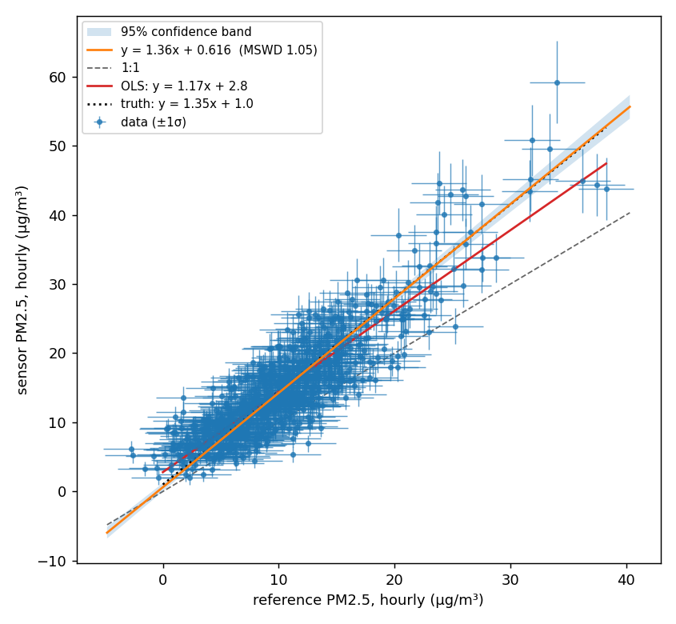

Sensor versus reference: York or OLS?¶
The case this library exists for: a low-cost air sensor sits next to a regulatory monitor for a month, and you want to know how the sensor responds relative to the reference. Is the slope 1? Is there an offset? Is the scatter what the two instruments' precisions predict?
The reflex is ordinary least squares of sensor on reference. This page shows, with a simulation where the truth is known, why that gives the wrong slope whenever the reference has appreciable noise, and when OLS is still the right choice.
The full script is examples/sensor_vs_reference.py.
Everything below comes from running it.
The setup¶
A month of hourly data, simulated so the true relationship is known:
| Quantity | Value | Basis |
|---|---|---|
| True PM2.5 | median 9 µg/m³, SD about 6, hour-to-hour autocorrelation 0.9 | typical US urban hourly series |
| Reference monitor noise | 2.4 µg/m³ hourly, one sigma | BAM-1020 hourly detection limit of 4.8 µg/m³ at two sigma; verify against the current datasheet |
| Sensor response | sensor = 1.0 + 1.35 × true | uncorrected optical sensors commonly over-read relative to FEM monitors (Barkjohn et al., 2021) |
| Sensor precision | ±(1.0 µg/m³ + 10% of reading) | InstrumentSpec(absolute=1.0, relative=0.10) |
Three fits of sensor against reference:
import york
from york.errors import InstrumentSpec
ols_slope, ols_intercept = np.polyfit(reference, sensor, 1)
result = york.fit(
reference, sensor,
sx=2.4, # BAM hourly, one sigma
sy=InstrumentSpec(absolute=1.0, relative=0.10),
)
What comes out¶

Hourly data, n = 720:
| Method | Slope | Intercept |
|---|---|---|
| Truth | 1.350 | 1.00 |
| OLS, sensor on reference | 1.166 | 2.79 |
| OLS, reference on sensor, inverted | 1.492 | −0.60 |
| York | 1.365 ± 0.028 | 0.62 |
York's MSWD is 1.05: the scatter is consistent with the stated precisions. Its test of slope = 1 gives p below 1e-30, as it should for a sensor reading 35 percent high.
OLS is 14 percent low on the slope and compensates with an intercept almost three times too large. Regressing the other way round and inverting is 10 percent high. The two OLS lines bracket the truth, and neither is it.
Why OLS gets the slope wrong¶
OLS assumes x is known exactly. When x carries random error with variance
σx², the fitted slope is attenuated by the reliability ratio
λ = var(true x) / (var(true x) + σx²)
so slope_OLS ≈ λ × slope_true. This is regression dilution, known since
the 1870s and worked out in full by Fuller (1987); Frost and Thompson (2000)
and Hutcheon et al. (2010) are readable treatments. It is a bias, not
noise: more data makes the estimate more precisely wrong.
Here var(true) is 32 (µg/m³)² and the hourly BAM noise variance is 5.8,
giving λ = 0.85 and a predicted OLS slope of 1.15. The fit gave 1.17, the
difference being sampling noise. The intercept is pulled up to keep the
line through the centroid.
The clinical chemistry literature reached this conclusion decades ago for exactly this problem, comparing one assay against another when both are imprecise (Cornbleet and Gochman, 1979; Linnet, 1993). Deming regression (Deming, 1943) is their standard remedy; York's method is the general weighted case of it, and Cantrell (2008) reviews the same family of fits for atmospheric chemistry.
The same month as daily means¶
Averaging 24 hours divides both instruments' random precision by
sqrt(24). The reference noise drops to 0.5 µg/m³, the reliability ratio
rises to 0.98, and the two methods converge:
| Method | Slope | Intercept |
|---|---|---|
| Truth | 1.350 | 1.00 |
| OLS, sensor on reference | 1.331 | 1.07 |
| OLS, reference on sensor, inverted | 1.348 | 0.90 |
| York | 1.341 ± 0.035 | 0.96 |
Two things to take from this:
- Averaging shrinks precision, not bias. The sensor still reads 35 percent high. York's answer barely moves between hourly and daily; OLS moves because its bias shrank.
- Sigmas must match the averaging interval. The script scales both
instruments' precision by
sqrt(24)for the daily fit. Feeding hourly sigmas to daily means gave an MSWD of 0.11 on the first run, the library's way of saying the stated uncertainties were far too large. York cannot save you from a wrong error model, but MSWD will tell you it is wrong.
What EPA guidance says, and whether it is right¶
EPA recommends OLS. For its purpose, that is defensible.
The US EPA's Air Sensor Guidebook (Williams et al., 2014), its successor the Enhanced Air Sensor Guidebook (US EPA, 2022), and the performance-targets reports for non-regulatory supplemental and informational monitoring (NSIM) of PM2.5 and ozone sensors (Duvall et al., 2021a, 2021b) all evaluate a sensor by ordinary least squares of sensor against a co-located FRM or FEM monitor, reporting slope, intercept and R² against target ranges. For PM2.5 the base-testing targets are a slope of 1.0 ± 0.35, an intercept within ±5 µg/m³, and R² ≥ 0.70, computed on 24-hour averages.
Why that holds up for the protocol it was written for:
- It uses daily averages against a FEM. At 24-hour averaging a beta-attenuation monitor's noise is well under 1 µg/m³, while the spread of daily means across a 30-day test is usually several µg/m³. The reliability ratio is close to 1 and OLS attenuation is a few percent, far inside a ±0.35 slope tolerance. The daily-means table above is exactly this situation: OLS and York agree within their uncertainties.
- It is a screening test, not a characterisation. The targets are deliberately loose pass/fail criteria for non-regulatory use. A few percent of bias in the statistic does not change the outcome.
- It needs no uncertainty model. OLS is reproducible across labs and sensor types without anyone having to agree on sigmas, which matters for a standard protocol.
- The Guidebook also wants a correction to apply to future sensor data. For that job OLS of reference on sensor is the right tool, because the attenuation is the shrinkage a predictor should have.
Where it stops holding up:
- Hourly data. Hourly BAM noise at typical US concentrations gives a reliability ratio of 0.8 to 0.9, so OLS understates the slope by 10 to 20 percent and overstates the intercept, as the hourly table above shows. The NSIM targets are defined on daily averages; applying the same OLS habit to hourly co-location is where things go wrong.
- Low-concentration sites and quiet months. The attenuation depends on the spread of concentrations during the test, not on the sensor. The same sensor gets a lower OLS slope at a clean site than at a polluted one. A York slope with a correct error model does not depend on where or when you tested.
- Two instruments of similar precision. Sensor against sensor, or a mid-cost monitor against a FEM at low concentrations. OLS is then biased in both directions and the choice of axis changes the answer.
- Reading the OLS slope as the sensor's response. The NSIM slope is a test statistic under a fixed protocol. It is not a property of the sensor, and reporting it as "the sensor reads 17 percent high" when York says 35 is the mistake this library exists to prevent.
Practical advice. Compute both. Report OLS slope, intercept and R² where a protocol asks for them, on the averaging interval it specifies. Report the York slope and intercept with their uncertainties, the MSWD, and the slope = 1 test as the sensor's actual response. York does not compute R² by design; take it from the OLS fit.
When to use which¶
Use York when the question is "how does the sensor respond?" The slope and intercept as properties of the sensor, the test of slope = 1, and the MSWD check that the two instruments' precisions explain the scatter. This is the method-comparison question, and it needs a method that treats both instruments as imperfect. The effect is large whenever the reference noise is not small compared with the spread of concentrations across the study: hourly beta-attenuation data at a clean site is the canonical case, and comparing two low-cost sensors to each other is worse.
Use OLS when the question is "what will the reference read, given this sensor value?" That is calibration for deployment, and the future sensor readings you will apply it to carry the same noise as the ones you fit on. OLS of reference on sensor is the best linear predictor for that job, and its attenuation is exactly the shrinkage a predictor should have (Frost and Thompson, 2000). Correcting it with York would over-correct.
Use OLS when a protocol specifies it, and report York alongside. The EPA guidance above defines slope, intercept and R² by OLS. Report those numbers for that purpose, on the averaging interval the protocol names. Then report the York slope so nobody mistakes an attenuated OLS slope for the sensor's response: in the hourly example above, OLS puts the sensor at 1.17, comfortably inside the target of 1.0 ± 0.35, while the sensor actually reads 1.35.
Either is fine when the reference is far more precise than the spread of the data. Daily FRM filters against a month of varied concentrations have a reliability ratio near 1, and the methods agree within their uncertainties. York still gives you MSWD and the hypothesis tests, so there is little reason not to use it.
A note on hourly data¶
The residuals in this simulation are white, because the noise was
generated that way. Real sensor residuals are not: they track humidity and
temperature, which are autocorrelated over hours. fit estimates the
effective sample size from the residuals and warns when it drops well below
n. When that fires, the uncertainties and p-values above are optimistic,
and the warning is the library telling you so rather than letting the
comparison be oversold.
References¶
- Barkjohn, K. K., Gantt, B., Clements, A. L. (2021). Development and application of a United States-wide correction for PM2.5 data collected with the PurpleAir sensor. Atmospheric Measurement Techniques 14, 4617–4637. doi:10.5194/amt-14-4617-2021
- Cantrell, C. A. (2008). Technical note: Review of methods for linear least-squares fitting of data and application to atmospheric chemistry problems. Atmospheric Chemistry and Physics 8, 5477–5487. doi:10.5194/acp-8-5477-2008
- Cornbleet, P. J., Gochman, N. (1979). Incorrect least-squares regression coefficients in method-comparison analysis. Clinical Chemistry 25(3), 432–438.
- Deming, W. E. (1943). Statistical Adjustment of Data. Wiley.
- Duvall, R. M., Clements, A. L., Hagler, G., et al. (2021a). Performance Testing Protocols, Metrics, and Target Values for Fine Particulate Matter Air Sensors: Use in Ambient, Outdoor, Fixed Site, Non-Regulatory Supplemental and Informational Monitoring Applications. US EPA, EPA/600/R-20/280.
- Duvall, R. M., Clements, A. L., Hagler, G., et al. (2021b). Performance Testing Protocols, Metrics, and Target Values for Ozone Air Sensors: Use in Ambient, Outdoor, Fixed Site, Non-Regulatory Supplemental and Informational Monitoring Applications. US EPA, EPA/600/R-20/279.
- Frost, C., Thompson, S. G. (2000). Correcting for regression dilution bias: comparison of methods for a single predictor variable. Journal of the Royal Statistical Society A 163(2), 173–189.
- Fuller, W. A. (1987). Measurement Error Models. Wiley.
- Hutcheon, J. A., Chiolero, A., Hanley, J. A. (2010). Random measurement error and regression dilution bias. BMJ 340, c2289. doi:10.1136/bmj.c2289
- Linnet, K. (1993). Evaluation of regression procedures for methods comparison studies. Clinical Chemistry 39(3), 424–432.
- US EPA (2022). Enhanced Air Sensor Guidebook. EPA/600/R-22/213.
- Wehr, R., Saleska, S. R. (2017). The long-solved problem of the best-fit straight line: application to isotopic mixing lines. Biogeosciences 14, 17–29. doi:10.5194/bg-14-17-2017
- Williams, R., Kilaru, V., Snyder, E., et al. (2014). Air Sensor Guidebook. US EPA, EPA/600/R-14/159.
- York, D., Evensen, N. M., Martínez, M. L., De Basabe Delgado, J. (2004). Unified equations for the slope, intercept, and standard errors of the best straight line. American Journal of Physics 72(3), 367–375. doi:10.1119/1.1632486